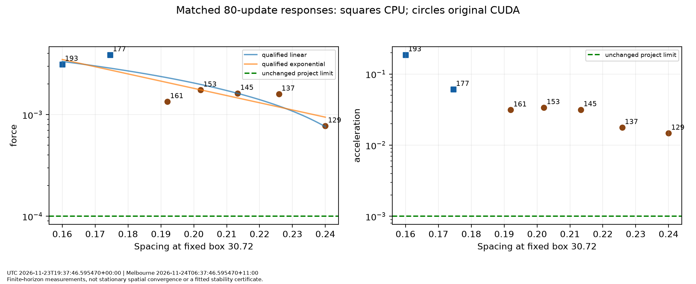

UTC 2026-11-23T19:37:46.502295+00:00; Melbourne 2026-11-24T06:37:46.502295+11:00
No original admission gate has changed. Optimizer updates are not physical time.
| Case | Backend | Updates | Force | Max acceleration | Last-ten median energy change | Last-ten <1e-9 |
|---|---|---|---|---|---|---|
| exact-control | cuda | 80 | 0.000940938 | 0.0153818 | 1.51e-08 | 1 |
| mesh-129 | cuda | 80 | 0.00124854 | 0.0129925 | 3.13e-08 | 0 |
| mesh-137 | cuda | 80 | 0.00206781 | 0.0175957 | 2.27e-07 | 0 |
| mesh-145 | cuda | 80 | 0.00143146 | 0.0322274 | 1.9e-07 | 0 |
| mesh-153 | cuda | 80 | 0.00213368 | 0.0296338 | 2.08e-07 | 0 |
| mesh-161 | cuda | 80 | 0.00209368 | 0.0298422 | 1.66e-07 | 0 |
| cpu-177 | cpu | 80 | 0.0040663 | 0.0544938 | 8.06e-07 | 0 |
| cpu-193 | cpu | 80 | 0.00398534 | 0.182941 | 6.08e-07 | 0 |
Per-accepted-update relative energy changes at 1e-7 and 1e-9; persistence counts; neighbour-angle warning at 30 degrees. These reproduce a reported measure, not the original optimizer or stopping implementation.
No perturbation-and-return experiment, independent same-state literature identification, or fixed-spacing domain comparison is performed. Nonstationary Q21 endpoints cannot establish local-minimum stability from a return claim.
Energy-only diagnostic evaluated; full published convergence/stability procedure not reproduced.
Registered fixed-box energy and geometric comparisons; literature approximately 0.1% relative-energy accuracy shown only as context. Additional native residual/morphology diagnostics are supplied by the workstation supplement.
Approximately 1% absolute bias and 0.1% relative-energy accuracy are reported estimates, not stopping thresholds. The paper studies Q through 16; it has no Q21 target field. No matching absolute-energy target is inferred.
Refinement consistency assessed on unresolved endpoints; stationary continuum convergence and reproduction remain unestablished.
Report actual grid spacing against the published 301^3, spacing 0.06 setup; export display-only n3=-0.95 surfaces and compare measured energies and residuals across our grids.
The methods description supplies no equivalent normalized-force/maximum-acceleration cutoff. Knot/link preimage correspondence and identical-state energy comparison are not established; no published-stability pass is invented.
Method-informed diagnostics applied; exact published basin, spatial accuracy and local-minimum reproduction remain unverified.
Detailed assessment · Measured comparisons · Every measured energy change
Supplement status: complete_pending_review
Full-field audit summary · Execution record · Updated response fits · Matched spatial comparisons
Points and qualified fits only; mixed CPU/CUDA optimization paths remain a comparison limit.
